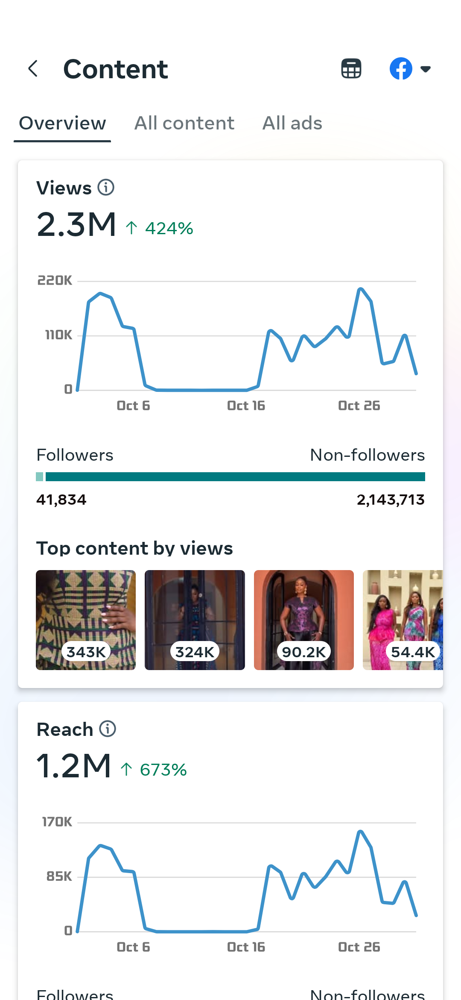
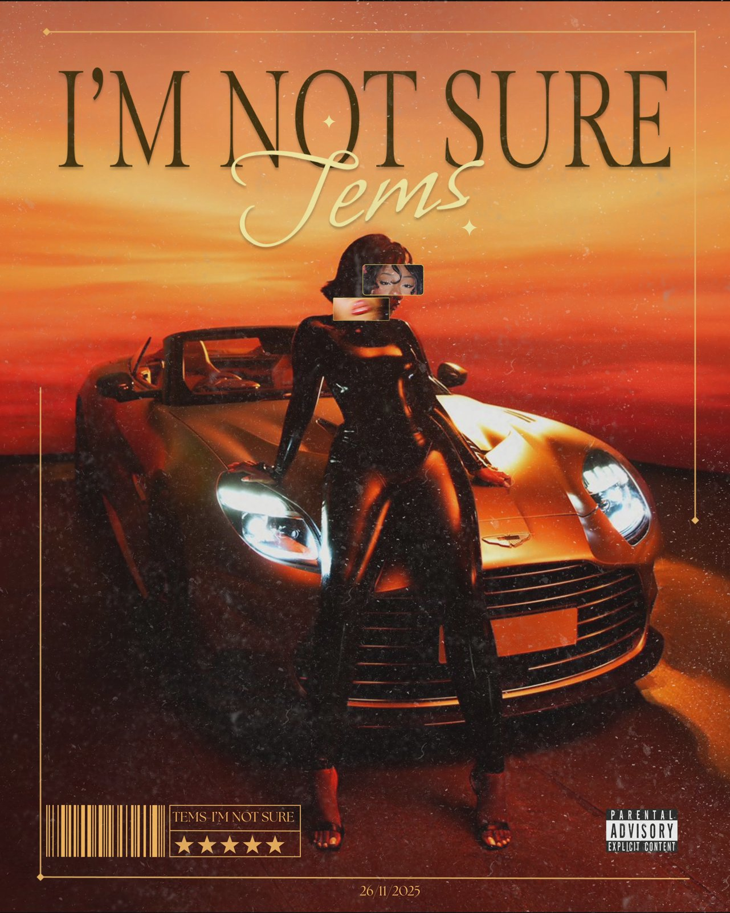
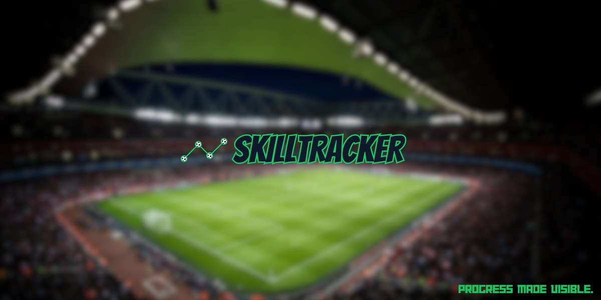
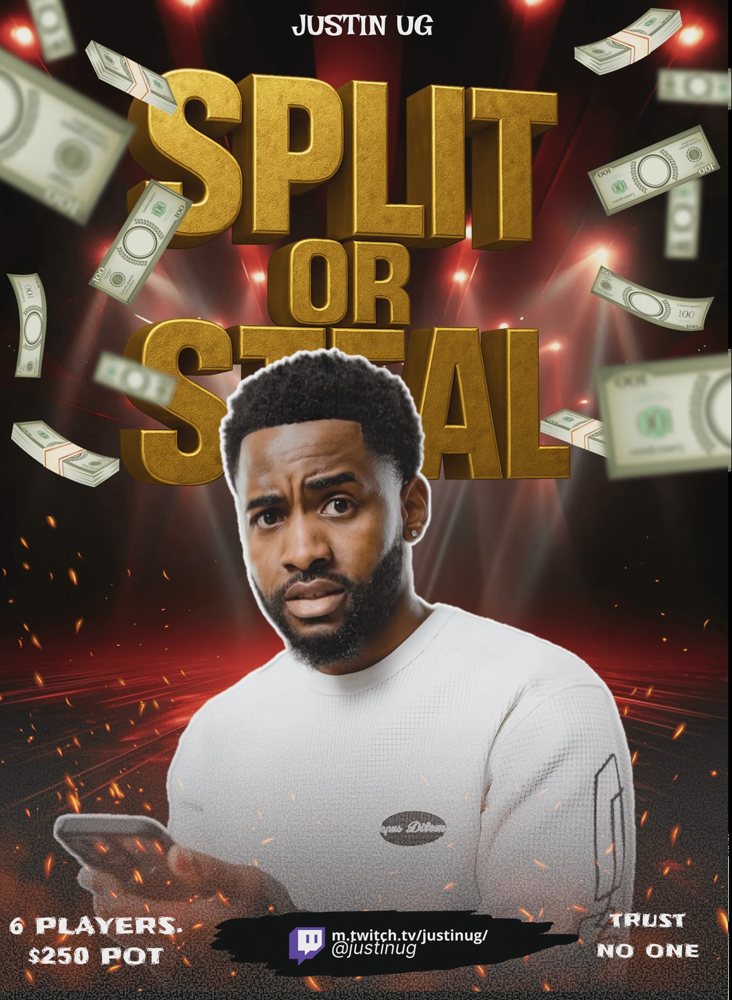

Portfolio
Michael Aririatu, Social Media Strategist & Visual Designer
Social media strategist and visual designer. I grow brand accounts and design the content that does it.
How I work: social instincts plus AI leverage
Across strategy and design, my approach is simple: understand what an audience actually responds to, then build the calendar, the creative and the daily engagement that turns that into growth. Whether it's a founder's personal account, a brand page or a community, I care about numbers the business can measure and content people actually stop for.
I'm also heavily AI-pilled, in the productive sense: I work with AI for efficiency everywhere it removes a repeat, and I build my own tools when nothing off the shelf fits. That's a whole section below.
I've done this at
Doola · Social Media Specialist (Contract) · Oct 2025 – May 2026
Executive social for the CEO on X and LinkedIn with a three-pillar content framework, outbound engagement through their Swarm channel, the newsletter revival, and the weekly content calendar and analytics in Notion.
Pixelops · Graphic Designer · Feb 2024 – Dec 2025
High-fidelity mockups, prototypes and brand guidelines for a US design agency's clients; 30+ designs a month, delivery timelines cut by 20%.
Zephans & Co · Social Media & Customer Experience Manager · Jan 2024 – Oct 2025
Digital campaigns, influencer partnerships, social commerce and support workflows; grew the brand's Instagram from 178k to 228k in about 21 months.
Dotbit · Community Manager · Aug 2022 – Feb 2023
Moderated and grew a crypto project's community from Singapore, remotely: content, timely responses, developer and partner relationships.
MediaEye · 3D Designer & Community Manager · Oct 2021 – Aug 2023
3D artwork aligned to brand image, plus campaigns and community engagement to grow the audience.
Llevarthebrand · Social Media Manager · Dec 2021 – Sep 2022
Structured social strategy on scheduling and analytics platforms, plus influencer campaigns, for the Nigerian market.
NiMEDix · 3D Designer · Feb 2023 – Aug 2023
3D assets and environments for client projects and promotional material.
Launches, growth and programmes I've led, and the results from them
Social strategy & growth · Founder accounts at doola
Ran the CEO's personal X and LinkedIn as his voice: a three-pillar content framework, outbound engagement and the newsletter revival that re-engaged dormant subscribers. Traffic and revenue figures come from doola's internal social scorecard.
- 10k → 19k followers
- on doola's LinkedIn page, grown organically while I ran it
- 53k → 59k followers
- on his LinkedIn, same period, posts written by me
- 30,248 followers
- on his X, up from about 27k while I ran it
- 1,200+ subscribers
- on the newsletter, from about 850 in two weeks of the revival
Receipts from the same period, public on LinkedIn: the "last tab a founder ever opens" post drew 1,574 reactions, 138 comments and 42 reposts, and the CEO's ChatGPT MCP launch post drew 609 reactions and 86 comments. More standouts: the "run for 10 days without you" post, the Y Combinator dream post, the "founders don't fail because of product" post, and the "perfectionism is procrastination" post.
Social strategy & growth · Zephans & Co
Owned the brand's Instagram and Facebook for years: the content calendar, the creative, influencer partnerships and the daily community engagement that kept the audience compounding. The receipts below are from those accounts.
- +50k followers
- in about 21 months
- 23.6K interactions
- in one month, up 550%
Branding & content · Pixelops
High-fidelity mockups, interactive prototypes and brand guidelines for client projects across digital and print.
- 30+ designs
- produced monthly
- 20%
- faster delivery timelines
Community · Dotbit
Moderated the crypto project's community: answering users, curating content, catching sentiment early and feeding it back to developers and partners.
- Remote
- from Singapore, full ownership of channels
- Front line
- between users and product
The receipts: Zephans content performance, straight from Meta's dashboard
Screenshots from the Meta Business Suite while I ran Zephans & Co's socials, not claims from a pitch deck. Every screenshot below is the full capture, nothing cropped.

2.3M views and 1.2M reach
Up 424% and 673% respectively, driven almost entirely by non-followers, with the top piece of content alone at 343K views.

23.6K interactions, up 550%
Mostly from non-followers, and Reels carried the engagement against Stories.

505.1K 3-second views
Plus 77 days 17 hours of total watch time in the same window, up 5.3K%.

Watch-through detail
443 1-minute views, with the top content ranked by interactions and reach, from the same window.
I don't just use AI, I build with it
When a workflow repeats, I automate it; when no tool exists, I build one. More of what I've shipped is on GitHub.
The outbound leads bot
A Python-based bot that watched Reddit and X/Twitter for relevant founder conversations and pinged me on Telegram every morning with the best new leads, already prioritized. Outbound went from an hour of scrolling to opening my inbox and working the best ones first.
- Sources
- Reddit and X/Twitter monitoring
- Delivery
- prioritized results via Telegram on a schedule
- Impact
- supported outbound engagement OKRs
The design side, straight from Dribbble
I post work as Wayne Michael on Dribbble, with fuller case studies on Behance. Swipe through a few recent shots, each shown in full:

Cover art design
Type-led cover artwork exploring bold colour and scale.

Logo wordmark exploration
Wordmark studies testing weight and letterform cuts for a brand identity.

Skilltracker logo
Geometric logo mark exploration for the Skilltracker brand.

Poster design
Poster concept pairing a photographic portrait with heavy typographic treatment; a personal experimental piece.
Older but still favourites: Aetherium brand identity and 3D logo design and animation.